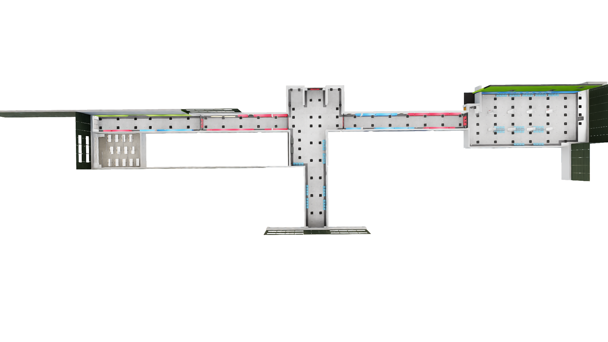
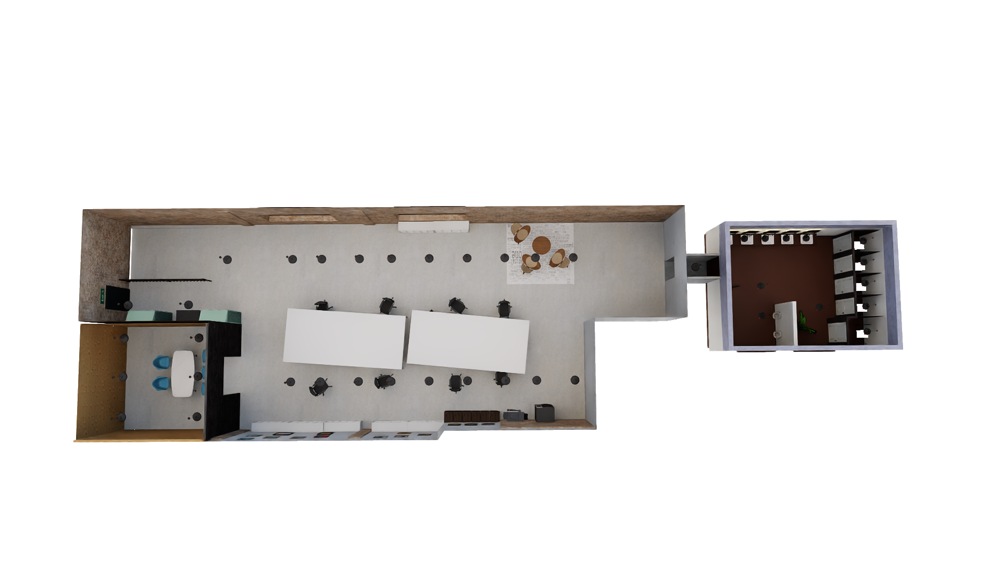
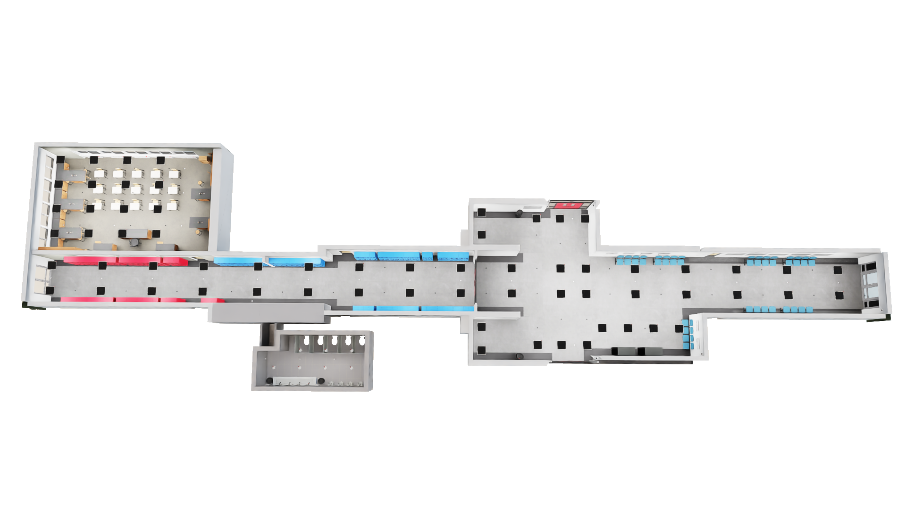
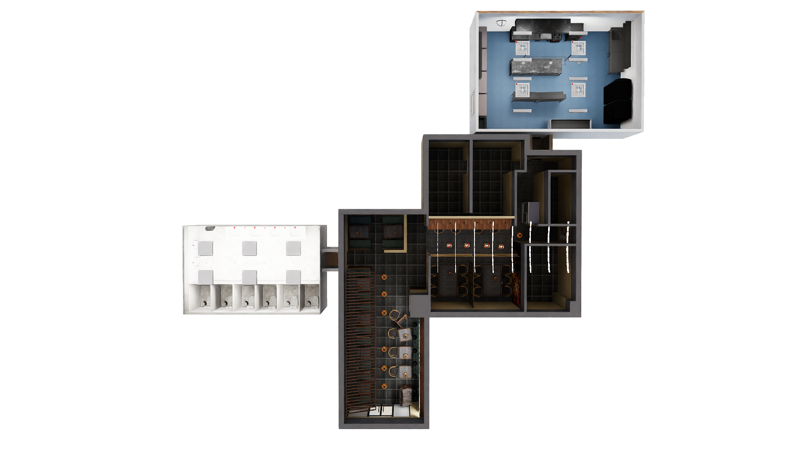
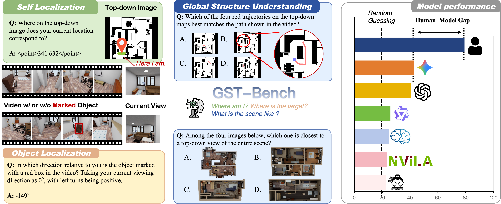
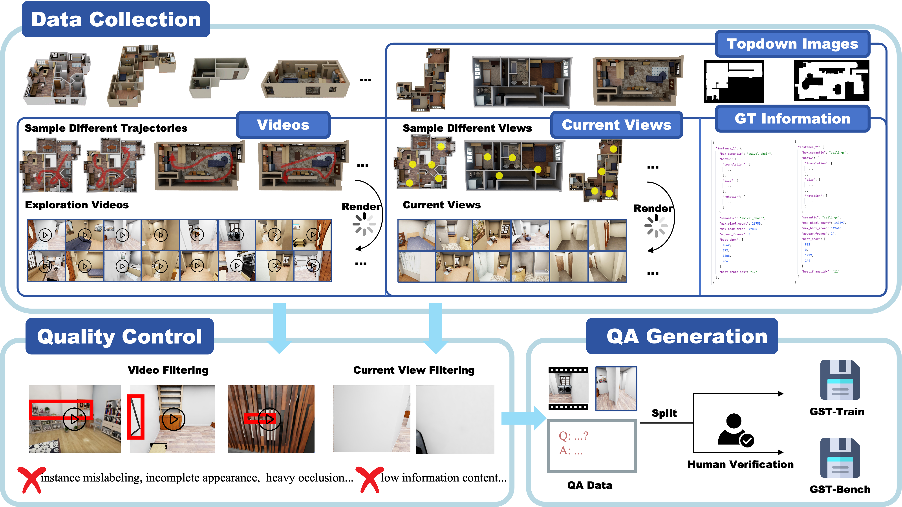
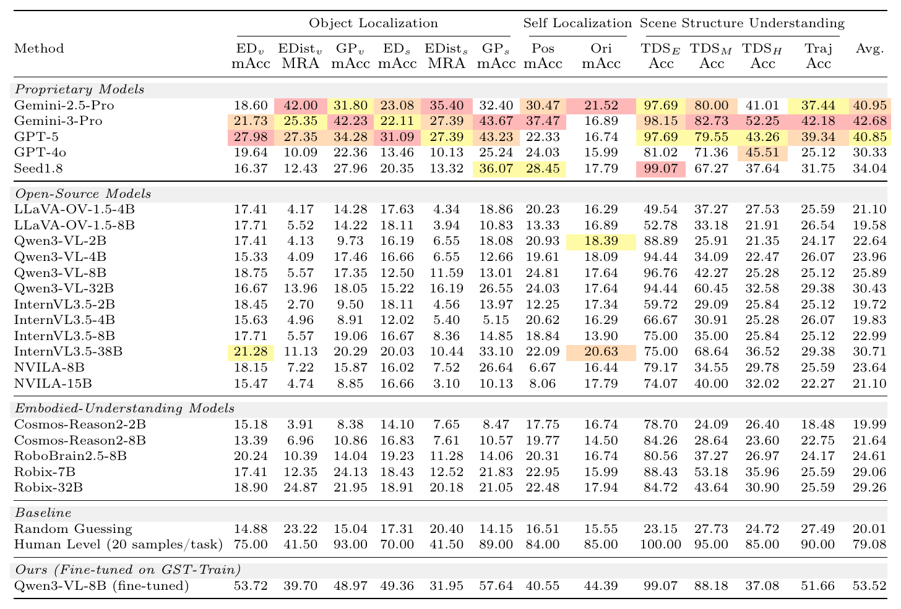
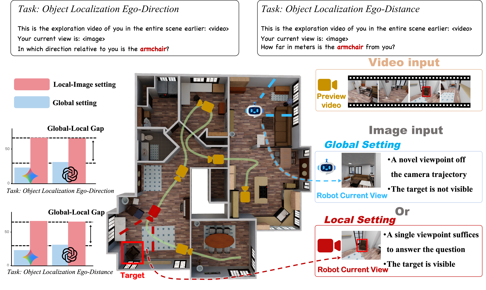
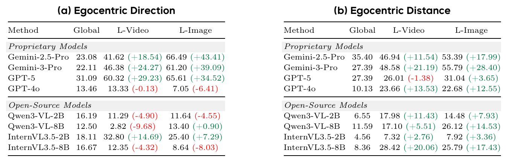

Top-down Selection (Easy)
Among the four images below, which one is closest to a top-down view of the entire scene? Please directly answer with the letter of the correct option.

Spatial intelligence is fundamental to embodied agents, yet existing benchmarks focus on local spatial perception from single or few viewpoints, overlooking global spatial awareness over continuous, long-horizon visual streams. To address this limitation, we introduce the Global-Spatial-Temporal Benchmark (GST-Bench), a VQA benchmark for global spatial intelligence in video understanding, comprising human-verified questions derived from 6,790 minutes of synthetically generated video. It requires models to perform accurate spatial inference from novel viewpoints unseen in the input video and to map egocentric observations onto global top-down images. A comprehensive evaluation of 22 state-of-the-art VLMs exposes a striking gap between models and humans: the strongest zero-shot model attains only 42.68, far below the human score of 79.08. To probe the cause of this gap, we construct GST-Bench-Local and find that models, despite strong local spatial understanding under the same task formulation, still fail to consolidate long-horizon observations into a globally consistent scene representation. We further provide GST-Train, a dataset for global spatial reasoning, as a complementary resource to facilitate future research on this challenge.





BibTeX will be available after internal approval and public release.